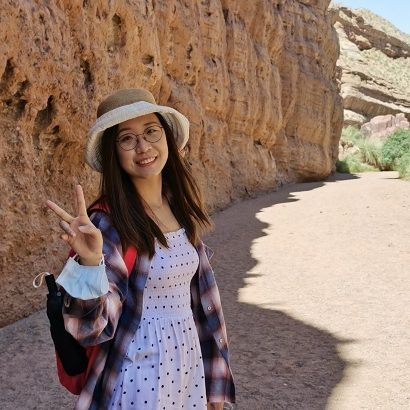

|
I am a Computer Science PhD student at Queen Mary University of London, where I am fortunate to be advised by Dr. Gareth Tyson. Prior to joining Queen Mary, I received my B.E. from Beihang University and my M.S. from Carnegie Mellon University and my MSc from The Hong Kong University of Science and Technology. I work on natural language processing and social media analysis. Email / CV / Google Scholar |
 |
{kind=link}
|
I'm interested in computer vision, machine learning, optimization, and image processing. Much of my research is about inferring the physical world (shape, motion, color, light, etc) from images. Representative papers are highlighted. |

|
Jonathan T. Barron, Ben Mildenhall, Dor Verbin, Pratul Srinivasan, Peter Hedman arXiv, 2021 project page / arXiv / video mip-NeRF can be extended to produce realistic results on unbounded scenes. |

|
Ajay Jain, Ben Mildenhall, Jonathan T. Barron, Pieter Abbeel, Ben Poole arXiv, 2021 project page / arXiv / video Supervising the CLIP embeddings of NeRF renderings lets you to generate 3D objects from text prompts. |
 
|
Under an Unknown Illumination Xiuming Zhang, Pratul Srinivasan, Boyang Deng, Paul Debevec, William T. Freeman, Jonathan T. Barron SIGGRAPH Asia, 2021 project page / arXiv / video By placing priors on illumination and materials, we can recover NeRF-like models of the intrinsics of a scene from a single multi-image capture. |
|
Template source code. |